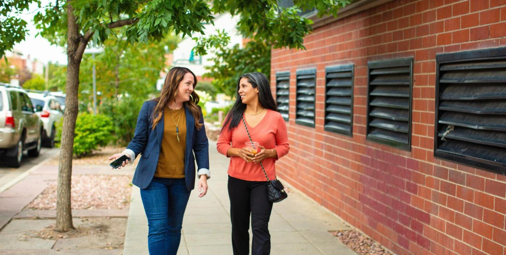

Questions and answers
The things causes and sponsors ask us most, answered in plain words.
For causes
Is it really free?
Yes, all of it. You won't pay for the script, the recording or the airtime, because our sponsors cover the cost.
Who can get a free ad?
Charities, volunteer fire and ambulance companies, schools, public programs and unpaid community groups can all apply. The Who qualifies page has the full list.
Do we have to be a registered nonprofit?
No. A volunteer group, a youth league or a neighborhood project can apply without any paperwork, as long as the message serves the public.
Can a business apply?
No. Free ads are for causes, and we do not air anything that promotes a business, a product or a paid service.
Can one person apply?
Yes, when the message is for the public good. A parent promoting a school fundraiser qualifies. A personal fundraiser needs a registered charity managing the money.
Who writes the ad?
We do. You tell us who you help and what you want listeners to do, we send a draft, and you change anything you like before it is recorded.
How long is the ad?
Every ad is 30 seconds, which is the standard length for radio and streaming audio.
Where does the ad play?
It plays on local radio and on streaming audio services such as Spotify and Pandora, aimed at listeners in your own area. Each ad runs for two to four weeks.
When can we get ours?
We air ads as sponsor funding comes in, and we work through applications in the order they arrive. Applying now holds your place in line.
How often can we apply?
Each group can receive one free ad every 12 months.
Can we use the ad anywhere else?
Yes. The finished ad is yours to keep, and you're welcome to post it on your website and social pages.
Do you air political ads?
No. We do not air anything for or against a candidate, a party or a ballot question.
For sponsors
Can I choose where my money goes?
Yes. You pick the causes, and your gift is split between them. If you don't pick, it goes to whichever cause has waited longest.
What does $250 pay for?
It pays for one cause's ad from start to finish: the script, the recording and the airtime.
Will listeners hear my name?
Yearly sponsors at the Supporter level and above are thanked by name on the air. A one-time gift puts your name on that ad's story page.
What does the on-air thank-you sound like?
It is one short line at the end of the ad, such as “Airtime made possible by Smith Hardware of Doylestown.” It names you and where you are, and it never includes prices or a sales pitch.
Can I pick a cause that is not on the list?
Sponsors choose from causes that have applied and been approved. If you know a group that should be on the list, send them to the application.
Is my gift tax-deductible?
Not yet. We're being formed as a Pennsylvania nonprofit and will apply to the IRS for 501(c)(3) status, and we won't take any payments until that is in place.
Can my business get a free ad if I sponsor?
No. To keep things fair, sponsors and board members cannot receive free ads.
About The Free Radio Project
Who runs The Free Radio Project?
It was founded by Sean Ahern, an audio engineer and copywriter in Doylestown, Pennsylvania. You can read more on the About page.
Is it a nonprofit?
It is being formed as a Pennsylvania nonprofit corporation and will apply to the IRS for 501(c)(3) status. We are not accepting payments until that is in place.
Where are you based?
Our office is at 152 N Main Street in Doylestown, Pennsylvania. We are starting with causes in Bucks County and will add regions as sponsors join.
How do I reach you?
Send a note through the contact form and we will reply within two business days.
Still have a question?
Send us a note and we will reply within two business days.
Contact us